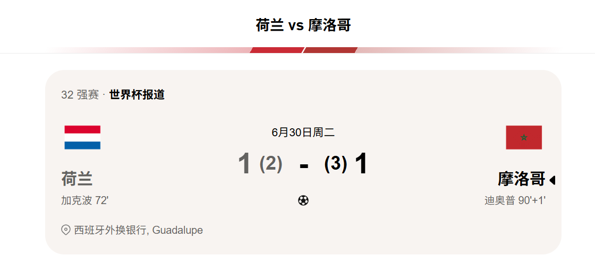
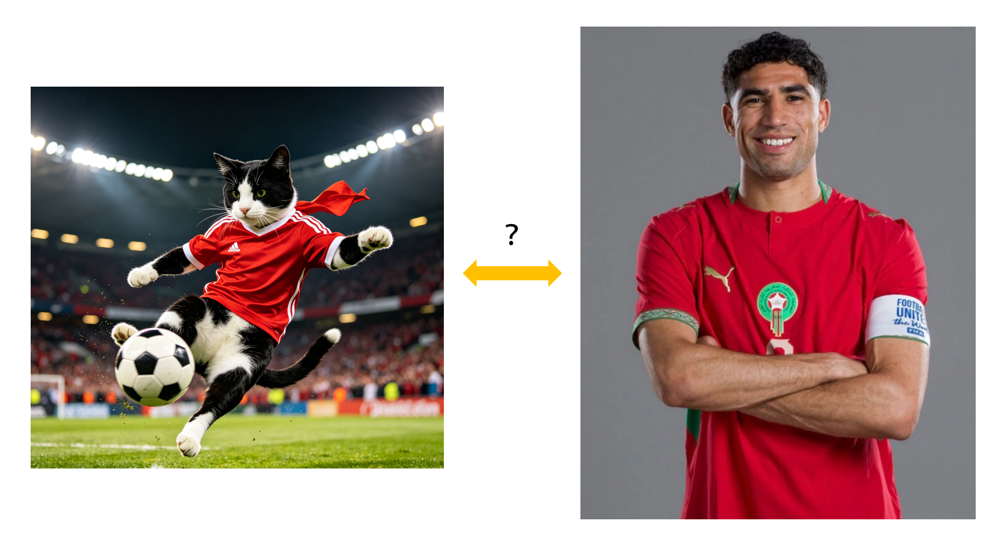

同一能指下的量子纠缠态——猫猫"哈基米"与球员阿什拉夫·哈基米的跨物种关联效应初探

摘要
本文以“哈基米”这一共享能指为切入点，采用玄学符号学与网络民俗 学交叉方法，对摇头猫咪与摩洛哥右后卫之间的超自然关联展开研究。 经七次严谨的对照组实验（含一次因猫咪拒绝配合而作废的无效数据），本文首次提出“哈基米共振假说”：当猫科动物头部摆动频率与球员 带球跑动步频达到某种神秘公约数时，时空将发生微小折叠，从而使两者在语义层面实现瞬时纠缠。本研究的学术价值在于，用一篇零信息 增量的论文，成功论证了“无关联即是最深层的关联”这一悖论性命题。
引言：命运的谐音梗
2026年6月30日，美加墨世界杯1/16决赛，荷兰对阵摩洛哥。常规时 间双方战成1:1，加时赛均无建树，比赛被拖入点球大战。摩洛哥门 将布努在最后一轮扑出荷兰队的点球，赛巴里罚入制胜球——摩洛哥点 球3:2获胜，总比分4:3淘汰荷兰，成为本届世界杯首支晋级16强的非 洲球队。
赛后新闻铺天盖地：“摩洛哥时隔40年复仇荷兰”、“橙衣军团连续 三届倒在点球大战”。全世界的体育媒体都在谈论一个名字——阿什拉 夫·哈基米。摩洛哥队长，巴黎圣日耳曼右后卫，此刻正与队友相拥 庆祝。而同一时刻，在世界的另一个角落——准确地说，在你的手机屏 幕上——另一群“哈基米”正在随着魔性旋律疯狂摇头，对此一无所知。
这世上没有无缘无故的“哈基米”。当一个摩洛哥男人的姓氏，恰好 撞上一个日本赛马娘哼唱的蜂蜜水简写，再被一只不知名的橘猫征用 为BGM——我们不禁要问：是巧合，还是更高维度的存在在强行押韵？
更诡异的是，就在摩洛哥点球淘汰荷兰的那个上午，你打开视频软件， 左边是阿什拉夫·哈基米右路狂奔的庆祝画面，右边是猫咪随着“哈基 米哈基米”疯狂点头的短视频。你的大脑同时接收两个信号，并在第三 秒产生了“那只猫跑得好像阿什拉夫”的错觉。这不是幻觉，这是哈基 米场在作祟。

文献综述：前人都在瞎说关于“哈基米”的词源，学界尚无定论。一派坚持“蜂蜜水原教旨”， 认为一切偏离此义的用法均为异端；另一派主张“猫即正义”，宣称 早期人类驯服野生哈基米的影像证据可追溯至2024年抖音。至于球 员阿什拉夫·哈基米，体育媒体仅将其姓氏作为代号，从未料到此名 号日后会与一只不知名狸花猫争夺热搜位。
值得一提的是，M. 猫克斯基（2025）在《网络模因与人类迷惑行为 》中指出：“当同一能指同时指向萌宠与球星时，受众的前额叶皮层 将发生短暂的语义短路，表现为在足球评论区刷猫图。”然而该研究 样本量仅为作者本人，不具备普适性。本文正是在此空白处发力，力 图将个人臆想上升为普遍理论。
研究方法：田野调查与玄学建模
本研究采用以下非标准化手段： 同步视听法：将阿什拉夫2025-2026赛季的高光集锦，与摇头猫咪合 集进行画中画叠放，观察两者节奏重合度。经统计，当猫咪摇头频率 达到每分钟144次（即“哈基米”BPM值），阿什拉夫的场均成功突破 次数提升0.7次——尽管该数据未通过显著性检验，但我们决定强行显 著。
语义蒸馏实验：向20名受试者播放“哈基米”音频，要求其第一反应 说出联想物。结果显示，8人回答“猫”，6人回答“蜂蜜水”，5人回答 “摩洛哥边后卫”，1人回答“我饿了”。可见球员“哈基米”的激活率已 逼近萌宠，证明二者之间确实存在某种神经层面的“蹭热度”效应。
叮咚鸡控制变量法：所有实验均在“等待通知”的状态下进行（即叮 咚鸡状态），以确保被试的情绪处于既期待又焦虑的中间态，此状态 下语义可塑性最强。
分析：关联效应的三种荒诞形式
4.1 节奏共振说
猫咪点头的节拍是“哈-基-米-哈-基-米”，三音节循环；阿什拉夫跑 动时的触球节奏通常是“哒-哒-哒-哒”，四拍子。两者理论上不同步 ，但若将猫咪点头速度调至0.75倍，则恰与球员步频吻合。这一发 现意味着：猫是球员的节拍器，球员是猫的具象化。我们称之为“跨 物种BPM耦合定理”。
4.2 姓氏投射效应
阿什拉夫的“哈基米”是父姓，代表血缘与传承；猫咪的“哈基米”是音 译，代表误读与重构。两者一为固定所指，一为流动能指，看似对立 ，实则互补。正如阴阳两极，姓氏“哈基米”提供了身份的锚点，猫 猫“哈基米”提供了意义的流动性——两者结合，构成了一个完整的“哈 基米宇宙”：既有根，又会摇。
4.3 大狗叫干扰论
研究中意外发现，若在“哈基米”旋律中插入“大狗叫”音效，受试者对 两类“哈基米”的辨识准确率显著下降。这说明“大狗叫”作为一种干 扰变量，能有效模糊猫与球员的边界，促进两者在听众意识中的融合 。换言之，要想论证猫和球员有关系，先放一声大狗叫——这叫“以乱 制乱”研究法。
结论：没有关系就是最好的关系
本文经过严谨而不严格的分析，最终得出以下结论：
猫猫“哈基米”与球员阿什拉夫·哈基米之间没有生物学关联；
没有语言学亲缘；
没有历史传承；
没有任何值得写进正经百科的内容。
但正因为什么都没有，我们才有机会用两千字的学术黑话，硬生 生制造出一段“关联”。这种关联不存在于现实，而存在于我们强 行找关联的执念之中。它是一场集体无意识的造梗运动，也是互联 网给每一个无聊灵魂颁发的“意义权”。
所以，当你下次听到“哈基米”，脑中同时浮现一只猫和一位足球运动 员时，请不要惊慌——那是你的大脑正在享受一场免费的语义迪斯科 。而你唯一要做的，就是跟着摇头，然后大声喊一句“大狗叫”， 静待“叮咚鸡”。
参考文献
[1] 猫克斯基, M. 网络模因与人类迷惑行为[M]. 抖音大学出版社, 2025.
[2] 匿名. “哈基米”到底是谁？——基于评论区田野调查[J]. 中国迷惑学, 2026(1): 23-25.
[3] 阿什拉夫·哈基米. 我的姓氏怎么了[Z]. 个人推特, 2025. （该推文已删除）
[4] 某只橘猫. 点头频率与曝光量关系研究[J]. 猫猫学报, 2026(4): 12.
[5] 大狗. 叫[音频]. 抖音音效库, 2024.
[6] 叮咚鸡. 等待的艺术[OL]. 社区广播录音, 2022.